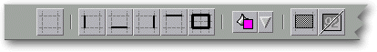
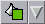
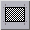
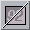

<!-- Documentation XQuad (c)1995-2000 AXENE contact axene@axene.org>
<html>

<head>
<title>Horizontal Toolbar: &quot;Cell Ornament&quot;</title>
</head>

<body BGCOLOR="#FFFFFF" BACKGROUND="Images/back.gif" TEXT="#000000">

<p ALIGN="right">  </p>

<p><br>
<br>
The Cell Ornament toolbar quickly accesses cell design functions. Cells can feature
different border thicknesses and colored background motifs. This toolbar provides shortcut
access to cell design elements, as they are defined from the &quot;<a
HREF="Box_CellPattern.html">Cell Background</a>&quot; and &quot;<a
HREF="Box_CellBorder.html">Cell Borders</a>&quot; dialog boxes.<br>
<br>
</p>

<hr>

<p align="center"><br>
 <br>
<small><i>Screen shot: Horizontal Toolbar Cell Ornament toolbar.</i></small></p>

<p><br>
</p>

<hr>

<p><br>
</p>

<h3>First Section of the Toolbar:</h3>

<ul>
  <li> <a NAME="noborder_icon">The
    first button eliminates all cell borders in selected cells.</a></li>
</ul>

<p><br>
</p>

<h3>Second Section of the Toolbar:</h3>

<p>Borders created in this section are fine black lines (outlines are thicker). To create
personalized borders use the &quot;<a HREF="Box_CellBorder.html">Cell borders&quot; dialog
box</a>. 

<ul>
  <li> <a NAME="left_icon">The first
    button gives each selected cell a left border. This button is engaged whenever the active
    cell has a left border. If clicked when engaged, it removes the left border of selected
    cells.</a><br>
    &nbsp;</li>
  <li> <a NAME="bottom_icon">The
    second button gives each selected cell a bottom border. This button is engaged whenever
    the active cell has a bottom border. If clicked when engaged, it removes the bottom border
    of selected cells.</a><br>
    &nbsp;</li>
  <li> <a NAME="right_icon">The third
    button gives each selected cell a right border. This button is engaged whenever the active
    cell has a right border. If clicked when engaged, it removes the right border of selected
    cells.</a><br>
    &nbsp;</li>
  <li> <a NAME="top_icon">The fourth
    button gives each selected cell a top border. This button is engaged whenever the active
    cell has a top border. If clicked when engaged, it removes the top border of selected
    cells.</a><br>
    &nbsp;</li>
  <li> <a NAME="around_icon">The last
    button outlines all selected cells. Clicking on this button outlines each cell region with
    a double wide line.</a></li>
</ul>

<p><br>
</p>

<h3>Third Section of the Toolbar:</h3>

<ul>
  <li> <a NAME="back_colorlist">The
    Color List selects the background color for the selected cells. </a></li>
</ul>

<p><br>
</p>

<h3>Fourth Section of the Toolbar:</h3>

<ul>
  <li> <a NAME="pattern_icon">The
    first button gives the selected cell backgrounds a grey weave motif. This shortcut
    background is a fine weave of black and white points. To create personalized backgrounds
    use the </a>&quot;<a HREF="Box_CellPattern.html">Cell background</a>&quot; dialog box. <br>
    &nbsp;</li>
  <li> <a NAME="revvideo_icon">The
    second button inverses background color with text color (inverse video) in each selected
    cell. This function inverses the font and background color for each selected cell. If the
    cell has no background, the background is said to be &quot;white&quot; (the gray worksheet
    background is merely for decoration).</a></li>
</ul>

<p><br>
</p>

<hr>

<p ALIGN="right"></p>
</body>
</html>
